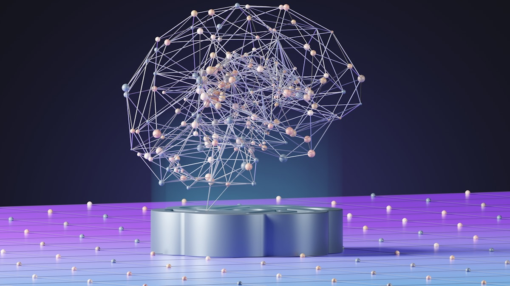

Feature · Sample
SAP finance in the agentic AI era: what it means for regulatory reporting
Autonomous, end-to-end execution is moving from pilot to production across SAP's finance stack. For regulatory reporting teams running FPSL and RAR, that shifts the real work from data entry to exception handling and control design — a change worth planning for now, not after the next audit cycle.
Read related coverage on SAP News ↗